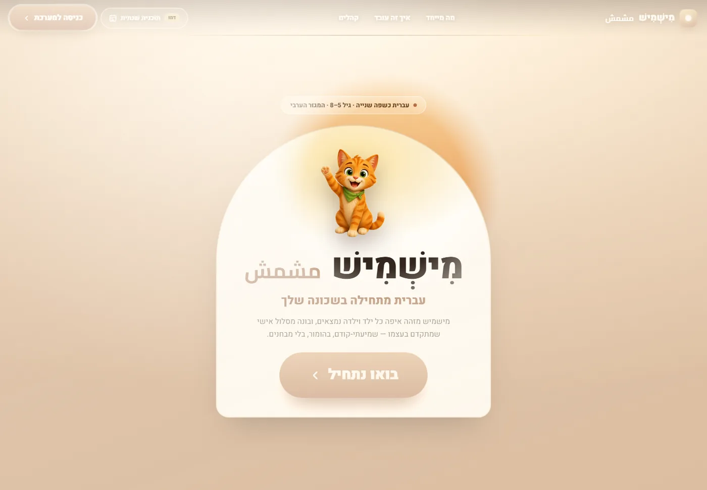
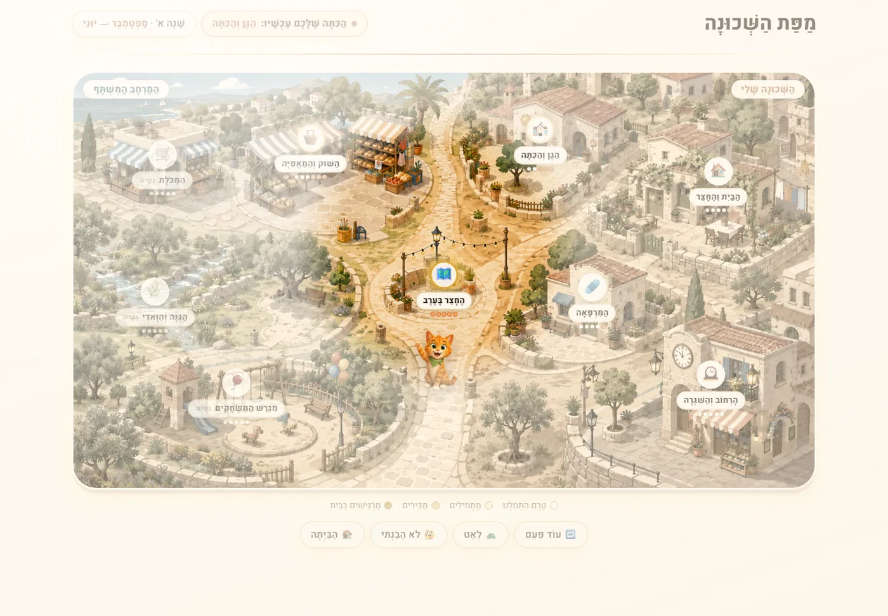

מפת השכונה
הבית והחצר, הגן והכיתה, השוק והמאפייה, המרפאה. הילד.ה מתקדם.ת ממקום למקום, וכל מקום פותח אוצר מילים חדש.
עברית כשפה שנייה לגילאי 5–8 במגזר הערבי. מישמיש מזהה איפה כל ילד.ה נמצא.ת ובונה מסלול שמתקדם בעצמו — שמיעתי-קודם, בהומור, ובלי מבחנים.

שער הכניסה — קשת הדלת ואור הפנס שחושף את השכונה
ילד.ה בן 5 לא לומד.ת שפה מטבלה. לומדים אותה במקומות: בבית, בשוק, במרפאה, במגרש. כל מקום הוא עולם מילים.
הבית והחצר, הגן והכיתה, השוק והמאפייה, המרפאה. הילד.ה מתקדם.ת ממקום למקום, וכל מקום פותח אוצר מילים חדש.
קודם שומעים, אחר כך מזהים, ורק בסוף קוראים. ילד.ה שעוד לא קורא.ת עברית עדיין מתקדם.ת.
המדידה קורית בתוך המשחק. אף אחד לא עוצר לבוחן — והמערכת בכל זאת יודעת מה נסגר ומה לא.
הממשק מדבר עברית וערבית, ושמות המקומות מופיעים בשתיהן. תשומת לב מיוחדת לצלילים שקשים לדוברי ערבית.

נשמח להראות לכם את המערכת מקרוב, ולדבר על פילוט בבית ספר או ברשות.
בואו נדבר